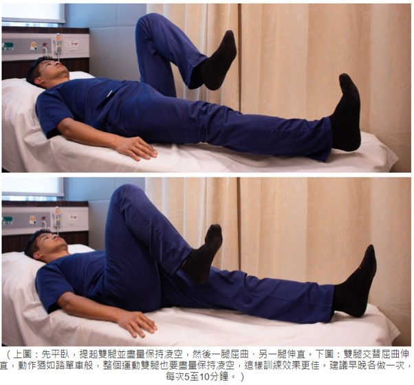
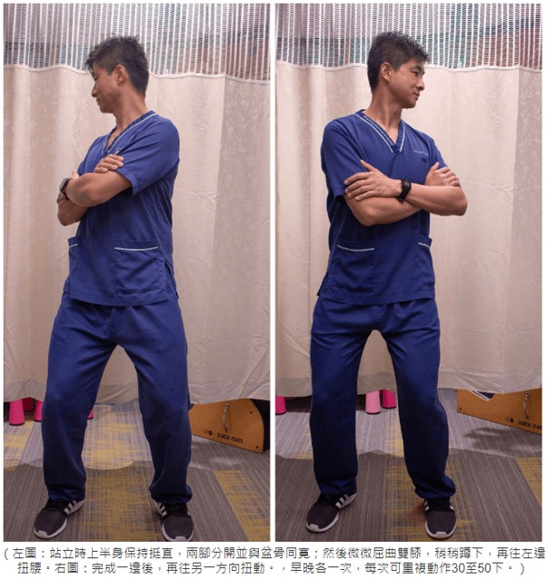
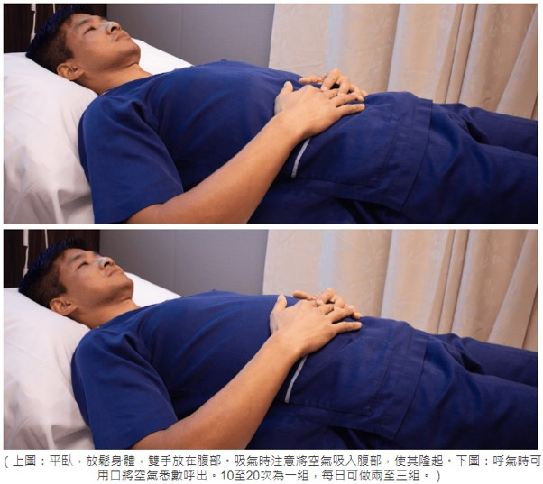

1. 凌空「踏單車」
這運動可以促進腸道蠕動，並可鍛煉核心肌肉群，增加排便時所需要的肌肉力量。先平臥，雙腿抬離床面，並輪流屈伸兩腿，動作猶如踏單車般，屈伸幅度愈大愈好，進行時整個腹部會有收緊的感覺。期間要注意腰椎弧度不能過大，以免令腰椎受壓。如有需要，可墊薄毛巾於腰下以減輕壓力。建議早晚各做一次，每次可做5至10分鐘，中途可稍作休息。
2. 轉腰運動
這運動有助促進腸道蠕動與消化液分泌，做法亦很簡單。先站立，上半身保持挺直，兩腳分開並保持與盆骨一樣寛，然後膝蓋微曲，如稍稍蹲下般，以固定下肢；跟着向左、右轉動上身，幅度要盡量大，速度不用太快。建議早晚各做一次，每次轉動30至50下，早上空腹狀態下進行更佳。如不方便站立，亦可坐着並如上所言轉動上身。
3. 腹式呼吸
這運動可改善消化系統血液循環，促進腸臟蠕動，亦可練習協調橫隔膜，有助排便，也可紓緩日常的壓力。先平卧，全身放鬆，手可放小腹上，然後慢慢用鼻吸氣，可想像把空氣吸到手部，此時腹部應慢慢地隆起，再用口慢慢呼出，腹部亦會慢慢下降。建議每天練習兩至三次，每次10至20下。
